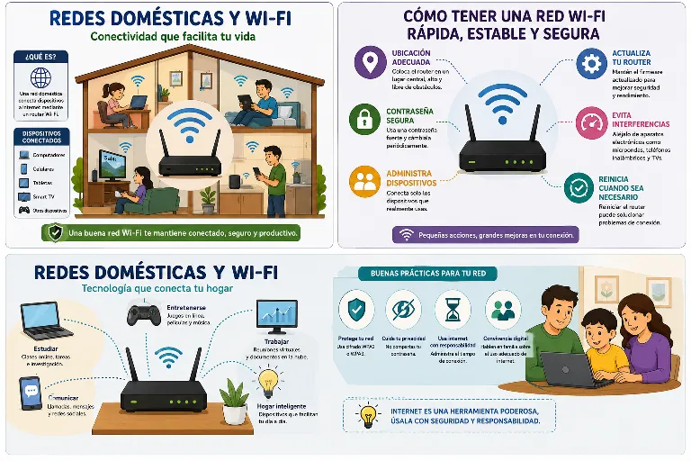

ARTÍCULO TÉCNICO
Redes domésticas y Wi-Fi
Introducción
7. REDES DOMÉSTICAS Y WI-FI
Las redes domésticas y el Wi-Fi se han convertido en una herramienta muy importante en la vida diaria de las personas. Gracias a ellas es posible conectar computadores, celulares, tabletas, televisores inteligentes e incluso algunos electrodomésticos a internet sin necesidad de utilizar cables. Actualmente, la mayoría de los hogares cuentan con una red inalámbrica que permite realizar actividades como estudiar, trabajar, comunicarse, ver videos, jugar en línea y buscar información. Por esta razón, es importante conocer cómo funcionan las redes Wi-Fi y aprender a utilizarlas de forma correcta y segura.

Una red doméstica está formada por varios dispositivos que se conectan entre sí mediante un router o módem. Este equipo es el encargado de recibir la señal de internet enviada por el proveedor del servicio y distribuirla a todos los dispositivos del hogar. Gracias a esta conexión, varias personas pueden utilizar internet al mismo tiempo desde diferentes lugares de la casa. Sin embargo, cuando muchos equipos están conectados al mismo tiempo, la velocidad puede disminuir, especialmente si se están realizando actividades que consumen mucho internet, como ver videos en alta calidad o descargar archivos grandes.
La ubicación del router también influye en la calidad de la señal. Lo más recomendable es instalarlo en un lugar abierto y ubicado en una zona central de la vivienda para que la señal pueda llegar con mayor facilidad a todas las habitaciones. Si el router se encuentra detrás de muebles, cerca de paredes muy gruesas o junto a otros aparatos electrónicos, la señal puede perder intensidad y provocar una conexión más lenta o interrupciones durante el uso de internet. Una buena ubicación permite aprovechar mejor el servicio y obtener una conexión más estable.
La seguridad de la red Wi-Fi es otro aspecto muy importante. Todas las redes inalámbricas deben estar protegidas con una contraseña segura para evitar que personas desconocidas se conecten sin autorización. Una contraseña debe combinar letras, números y, si es posible, algunos caracteres especiales. También es recomendable cambiar la contraseña de vez en cuando y no compartirla con personas que no pertenezcan al hogar. De esta manera se protege la red y se evita que el servicio se vuelva más lento por el uso de personas no autorizadas.
Además de proteger la contraseña, es importante mantener actualizado el router. Muchos fabricantes publican actualizaciones que mejoran el funcionamiento del equipo y aumentan la seguridad de la red. También es recomendable cambiar el nombre predeterminado de la red WiFi para que no muestre información del fabricante o del modelo del router.
Estas pequeñas acciones ayudan a reducir los riesgos de que otras personas intenten acceder a la red sin permiso.
Cuando la conexión presenta problemas, existen algunas soluciones sencillas que pueden ayudar. Reiniciar el router, verificar que todos los cables estén correctamente conectados y comprobar que no existan demasiados dispositivos utilizando internet al mismo tiempo son algunas de las acciones más comunes. En ocasiones, mover el router a otro lugar o acercarse un poco más a él también puede mejorar considerablemente la calidad de la señal. Si los problemas continúan, es recomendable comunicarse con el proveedor del servicio de internet para recibir asistencia.
El uso responsable de la red Wi-Fi también forma parte de una buena convivencia en el hogar. Es importante evitar realizar descargas muy pesadas o consumir demasiado ancho de banda cuando otras personas necesitan internet para estudiar o trabajar. Compartir adecuadamente el uso de la conexión permite que todos los integrantes de la familia puedan realizar sus actividades sin inconvenientes. Además, enseñar a los niños y jóvenes a utilizar internet de manera segura ayuda a prevenir riesgos relacionados con la privacidad y la seguridad digital.
En conclusión, las redes domésticas y el Wi-Fi son herramientas fundamentales para la comunicación, el estudio y el trabajo. Conocer su funcionamiento, proteger la red con una buena contraseña, mantener actualizado el router y utilizar internet de forma responsable permite disfrutar de una conexión más segura y estable. Adoptar estos hábitos contribuye a mejorar el rendimiento de la red y facilita que todos los miembros del hogar puedan aprovechar al máximo los beneficios que ofrece la tecnología.